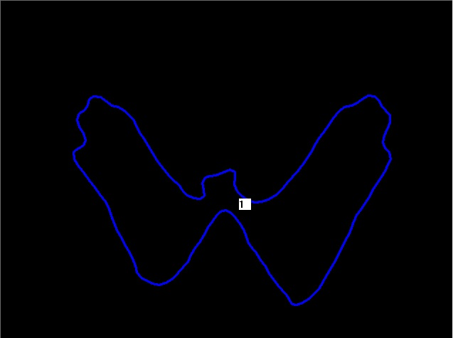

|
You can extract blob data from any depth image produced by your application’s sensor. A depth image is a 16-bit gray-scale image in which a point’s color value indicates its distance from the sensor.
The blobs and contour lines are extracted from the images that are currently “seen” by the sensor. To get the current data, call the CreateOutput function. You can then iterate over the identified blobs and examine their data (see Understanding the Blob Data), using the QueryBlobByAccessOrder function. You can specify the access order (see AccessOrderType) to access the set of extracted blobs in the right-to-left order, from the nearest to the farthest blob, or from the largest to the smallest blob.
The following code sample demonstrates how to iterate over blobs:
C++ Example 57: Access the Blob Data
// Create an output.
PXCBlobData * blobData = blobModule->CreateOutput();
// Streaming
while (sm->AcquireFrame(true) >= PXC_STATUS_NO_ERROR) {
// Get extracted blobs
blobData->Update(); // update to the current blob data
// Iterate over blobs from right to left
PXCI32 iBlobsNum = blobData->QueryNumberOfBlobs();
for (int i = 0; i < iBlobsNum; i++) {
PXCBlobData::IBlob * pBlob = NULL;
blobData->QueryBlobByAccessOrder(i, PXCBlobData::ACCESS_ORDER_RIGHT_TO_LEFT, &pBlob);
// handle extracted blob data
PXCI32 nContours = pBlob->QueryNumberOfContours();
…
}
// Next frame
sm->ReleaseFrame();
}
// Clean Up
blobData->Release();
|
C# Example 57: Access the Blob Data
// Create an output.
PXCMBlobData blobData = blobModule.CreateOutput();
// Streaming
while (sm.AcquireFrame(true) >= pxcmStatus.PXCM_STATUS_NO_ERROR) {
// Get extracted blobs
blobData.Update(); // update to the current blob data
// Iterate over blobs from right to left
Int32 iBlobsNum = blobData.QueryNumberOfBlobs();
for (int i = 0; i < iBlobsNum; i++) {
PXCMBlobData.IBlob pBlob;
blobData.QueryBlobByAccessOrder(i, PXCMBlobData.AccessOrder.ACCESS_ORDER_RIGHT_TO_LEFT, out pBlob);
// handle extracted blob data
Int32 nContours = pBlob.QueryNumberOfContours();
…
}
// Next frame
sm.ReleaseFrame();
}
// Clean Up
blobData.Dispose();
|
Java Example 57: Access the Blob Data
// Create an output.
PXCMBlobData blobData = blobModule.CreateOutput();
// Streaming
while (sm.AcquireFrame(true) >= pxcmStatus.PXCM_STATUS_NO_ERROR) {
// Get extracted blobs
blobData.Update(); // update to the current blob data
// Iterate over blobs from right to left
Int32 iBlobsNum = blobData.QueryNumberOfBlobs();
for (int i = 0; i < iBlobsNum; i++) {
PXCMBlobData.IBlob pBlob=new PXCMBlobData.IBlob();
blobData.QueryBlobByAccessOrder(i, PXCMBlobData.AccessOrder.ACCESS_ORDER_RIGHT_TO_LEFT, pBlob);
// handle extracted blob data
Int32 nContours = pBlob.QueryNumberOfContours();
…
}
// Next frame
sm.ReleaseFrame();
}
// Clean Up
blobData.close();
|
Figure 22 to Figure 24 show examples of segmentation image and contour, extracted from the detected blob in the depth image:
Figure 22: Input depth image
Figure 23: Output segmentation image

Figure 24: Output contour line
|